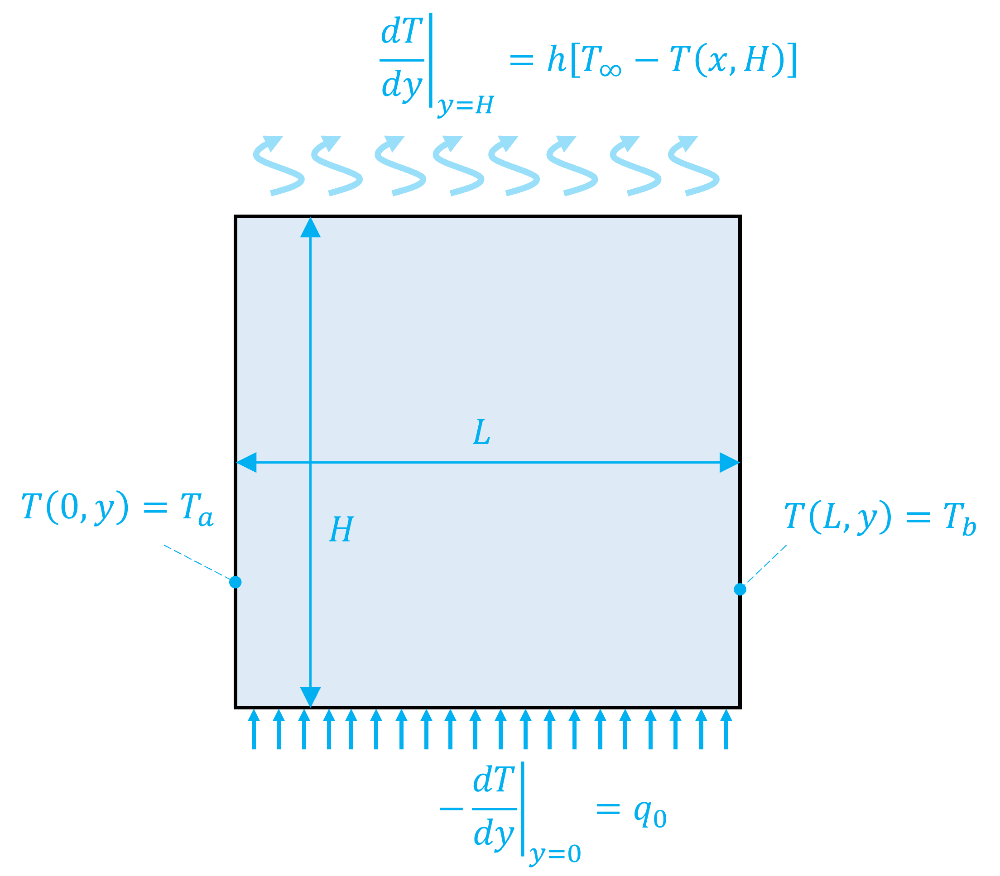
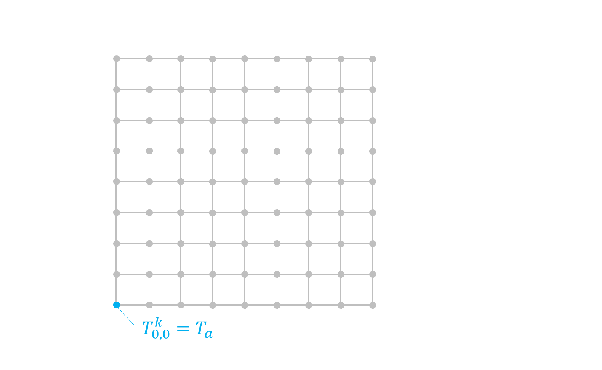

11. Diferencias finitas para ecuaciones diferenciales parciales#
11.1. Introducción#
Como mencionamos en la unidad 9, una ecuación en derivadas parciales (EDP) corresponde a una ecuación diferencial para una función desconocida con derivadas respecto a dos o más variables dependientes.
Por ejemplo,
El orden de una EDP se define respecto a la derivada parcial de mayor orden. Así, la ecuación (11.1) y (11.4) son de segundo orden, mientras que (11.2) y (11.3) son de tercer orden.
Se dice que una EDP es lineal si, dada dos soluciones \(u_1\) y \(u_2\), la función \(u_1 + u_2\) también es solución. Por ejemplo, (11.1) y (11.2) son lineales, mientras que (11.3) y (11.4) no lo son.
En este curso nos enfocaremos en EDP lineales de segundo orden de la forma:
donde \(A\), \(B\), \(C\) son funciones de \(x\) e \(y\), mientras que \(D\) es una función de \(x\), \(y\), \(\partial u / \partial x\) y \(\partial u / \partial y\).
A partir de esta forma general podemos clasificar una EDP lineal de segundo orden como elíptica, parabólica o hiperbólica.
{kind=link}
Esta clasificación es relevante dado que cada categoría se relaciona con problemas de ingeniería específicos, que demandan soluciones especiales.
Comúnmente, las ecuaciones elípticas se utilizan para caracterizar sistemas en estado estacionario, tales como la deflección de una placa sometida a una carga, o la distribución de temperaturas de en una cavidad 2D.
Las ecuaciones parabólicas, en cambio, se usan generalmente cuando la función depende del tiempo. Por ejemplo, la deflección de una barra, inicialmente sin carga, sometida a una carga en la punta.
Las ecuaciones hiperbólicas son comúnmente utilizadas en problemas oscilatorios, como vibraciones o propagación de ondas electromagnéticas.
En esta unidad revisaremos EDP de tipo ellípticas y parabólica, dada su reelevancia en problemas de ingeniería mecánica.
11.2. Ecuaciones elipticas (EDP estacionaria)#
La ecuación de Laplace es una EDP elíptica. Se utiliza comúnmente en problemas de conducción de calor. En el caso 2D, la ecuación de Laplace describe la distribución de temperaturas en en el espacio.
El método más sencillo para resolver EDPs de este tipo es diferencias finitas.
{kind=link}
Pimero debemos discretizar el dominio en una serie de nodos.
El segundo paso es aplicar un esquema de diferencias finitas en cada nodo. En este caso, lo más conveniente es aplicar diferencia central:
Reemplazando en la ecuación de Laplace, obtenemos una ecuación de la forma:
por conveniencia, dejamos los valores de \(\Delta x\) y \(\Delta y\) en el numerador para evitar problemas de crecimiento del error. Esto debido a que \(\Delta x < 1\) y \(\Delta y < 1\).
El siguiente paso es discretizar las condiciones de borde.
Considerando una placa de ancho \(L\) y alto \(H\) con las condiciones de borde de la figura
{kind=link}
En el caso del lado izquierdo y derecho, tenemos condiciones de Dirichlet.
En el caso del borde sobre y bajo la placa tenemos condiciones de Neumann. Acá, utilizamos diferencia hacia adelante o hacia atrás según corresponda:
Finalmente, obtenemos un sistema de ecuaciones de la sforma:
Consideremos, por ejemplo, una malla de 3x3 nodos
{kind=link}
El sistema de ecuaciones, en su forma matricial, es:
Cuando extendemos el número de nodos, el sistema toma la forma de una matriz diagonal dominante
Por ejemplo, si consideramos \(\Delta x = \Delta y = 1\) y condiciones de borde de Dirichlet, podemos comprobar que la matriz \(A\) toma la forma:
¿Cómo podemos implementar un código computacional que genere el sistema \(Ax = b\) con este esquema, de forma genérica y para cualquier tipo de condición de borde?
11.2.1. Solución EDP lineal estacionaria#
Antes de implementar nuestro código, debemos recordar que la solución a este tipo de sistemas está dado por el método de Gauss-Seidel.
Recordando la unidad 2 del curso, el método de Gauss-Seidel se resume en los siguientes pasos:
Asumimos un valor inicial para \(x_2^{(0)}, x_3^{(0)}, \cdots, x_n^{(0)}\) (con excepción de \(x_1^{(0)}\)).
Calculamos un nuevo valor para \(x_1^{(1)}\) mediante:
\[\begin{equation*} x_1^{(1)} = \frac{1}{a_{1,1}}\Big[y_1 - \sum_{j \ne 1}^{n}{a_{1,j}x_j^{(0)}} \Big] \end{equation*}\]Utilizando el nuevo valor \(x_1^{(1)}\) y el resto de \(x^{(0)}\) (con excepción de \(x_2^{(0)}\)), determinamos \(x_2^{(1)}\).
\[\begin{equation*} x_2^{(1)} = \frac{1}{a_{2,2}}\Big[y_2 - \sum_{j \ne 1,2}^{n}{a_{2,j}x_j^{(0)}} - {a_{2,1}x_1^{(1)}}\Big] \end{equation*}\]Repetimos el paso 3 hasta completar todos los elementos del vector \(x\).
Continunamos iterando hasta que \( \| x^{(i)} - x^{(i-1)}\| \lt \varepsilon \), donde \(\varepsilon\) es el la tolerancia definida respecto al error absoluto.
Siguiendo este esquema, una forma alternativa es implementar el método de Gauss-Seidel directamente, es decir, sin desarrollar la forma explícita del sistema \(Ax = b\).
En otras palabras, implementamos el método iterativo a través de las ecuaciones:
donde \(T_{i,j}^*\) corresponde al valor obtenido después de cada iteración.
La siguiente animación ilustra el proceso iterativo:
{kind=link}
11.2.2. Solución EDP estacionaria en python#
Analicemos esto en un código.
Considerando los siguientes parámetros:
# definimos las constantes del problema
Ta = 500 # Temperatura al lado izquierdo (K)
Tb = 500 # Temperatura al lado derecho (K)
Too = 300 # Temperatura del aire (K)
h = 100 # Coeficiente convectivo (m^-1)
q0 = 1000 # flujo de calor (K/m)
L, H = 1, 1.5 # Largo y ancho de la cavidad (m)
import numpy as np
from numpy.linalg import norm # norma de Frobenius
from itertools import product # librería para iteración
Implementamos el método en una función, definida en base al número de nodos \(N_x\) y \(N_y\) y la tolerancia relativa \(\frac{\|x - x_\mathrm{old}\|}{\|x\|} < \varepsilon_\mathrm{rel}\)
Como valor de entrada en la iteración, consideramos \(T^0_{i,j} = T_\infty\)
def T_plate(Nx,Ny,rel_tol, k_iter = 10000):
# Definimos las características de la malla
nx, ny = Nx - 1, Ny - 1 # índice último nodo
dx, dy = L/(Nx - 1), H/(Ny - 1) # espaciamiento entre nodos
# Iteramos
T = Too*np.ones((Nx,Ny)) # valores primera iteración
converged = False # booleano para chequear convergencia
for k in range(k_iter):
Told = T.copy() # guardamos la iteración previa
for i, j in product(range(Nx),range(Ny)): # loop sobre i y j
# condiciones de borde
if i == 0: T[i,j] = Ta
elif i == nx: T[i,j] = Tb
elif j == 0: T[i,j] = T[i,j+1] + dy*q0
elif j == ny: T[i,j] = 1/(1 + dy*h)*(T[i,j-1] + dy*h*Too)
# nodos centrales
else: T[i,j] = 1/(2*dx**2 + 2*dy**2)*(dy**2*T[i+1,j] + dy**2*T[i-1,j] + dx**2*T[i,j+1] + dx**2*T[i,j-1])
E_rel = norm(T - Told)/norm(T) # comprobamos el error relativo
if E_rel < rel_tol: # condición de convergencia
print('Converged!\n\tN. iter = %i\n\tE_error = %.3f%%' %( k, E_rel*100))
converged = True
break
if not converged: print('Method did not converged!\n\tE_error = %.3f%%' % (E_rel*100))
return T
# Definimos las características de la malla
Nx, Ny = 51, 76 # total de nodos
rel_tol = 0.00001 # tolerancia error relativo
T = T_plate(Nx,Ny,rel_tol) # Determinamos T(x,y)
Converged!
N. iter = 2073
E_error = 0.001%
%%capture showplot
import matplotlib.pyplot as plt
from matplotlib import cm # librería de mapa de colores
x = np.linspace(0,L,Nx) # coordenadas x
y = np.linspace(0,H,Ny) # coordenadas y
xx, yy = np.meshgrid(x,y) # malla x-y
plt.figure(figsize = (7, 7)) # tamaño de la figura
plt.rcParams.update({'font.size': 18}) # tamaño de fuente
plt.pcolor(xx, yy, T.T, cmap=cm.get_cmap(cm.plasma)) # Mapa T(x,y)
plt.colorbar(label="Temperatura (K)", orientation="vertical") # Etiqueta en la barra de colores
plt.xlabel('x (m)')
plt.ylabel('y (m)')
plt.axis('scaled')
plt.show()
showplot()
/tmp/ipykernel_203784/4126467964.py:11: MatplotlibDeprecationWarning: The get_cmap function was deprecated in Matplotlib 3.7 and will be removed two minor releases later. Use ``matplotlib.colormaps[name]`` or ``matplotlib.colormaps.get_cmap(obj)`` instead.
plt.pcolor(xx, yy, T.T, cmap=cm.get_cmap(cm.plasma)) # Mapa T(x,y)
Notar que para graficar usamos la traspuesta de la solción mediante el operador .T
plt.pcolor(xx, yy, T.T)
Esto es debido a que el índice \(i\), asociado al eje \(x\), corresponde a las filas del arreglo T, mientras que el índice \(j\) recorre las columnas de T.
Notar también que, en este problema, requerimos de un error relativo pequeño (0.001% en este caso) para asegurar convergencia. Si aumentamos la tolerancia, la solución se hace sensible al valor inicial en la iteración.
11.2.3. Variables secundarias#
En el problema anterior, la temperatura es la varible principal del problema. Sin embargo, es común que también necesitemos información de variables secundarias basadas en la derivada o integral de la variable principal.
Por ejemplo, el flujo de calor está definido por: \(\vec{q} = -k \nabla T = - k\left(\frac{\partial T}{\partial x}\hat{x} +\frac{\partial T}{\partial y}\hat{y}\right)\)
En python usamos gradient para determinar la derivada en problemas de dos o más dimensiones
%%capture showplot1
skip = (slice(None, None, 5), slice(None, None, 5))
qy, qx = np.gradient(T.T,y,x) # gradiente
plt.figure(figsize = (7, 7))
plt.rcParams.update({'font.size': 18})
plt.pcolor(xx, yy, T.T, cmap=cm.get_cmap(cm.plasma))
plt.colorbar(label="Temperatura (K)", orientation="vertical")
plt.quiver(xx[skip],yy[skip],- qx[skip],- qy[skip]) # campo vectorial de q
plt.xlabel('x (m)')
plt.ylabel('y (m)')
plt.axis('scaled')
plt.show()
showplot1()
/tmp/ipykernel_203784/4229917211.py:7: MatplotlibDeprecationWarning: The get_cmap function was deprecated in Matplotlib 3.7 and will be removed two minor releases later. Use ``matplotlib.colormaps[name]`` or ``matplotlib.colormaps.get_cmap(obj)`` instead.
plt.pcolor(xx, yy, T.T, cmap=cm.get_cmap(cm.plasma))
Notar el uso de la función gradient y quiver en este caso .
En el caso de gradient, debemos alternar los ejes \(x\) e \(y\) en la forma:
qy, qx = np.gradient(T.T,y,x) # gradiente
Para poder determinar el valor de \(q\) debemos aplicar el negativo de qx y qy. Esto lo vemos en la función quiver:
plt.quiver(xx,yy,- qx,- qy) # campo vectorial de q
Por último, usamos slice para reducir el número de índices a graficar por quiver. En este contexto, la instrucción skip = (slice(None, None, 5), slice(None, None, 5)), es equivalente a:
plt.quiver(xx[::5,::5],yy[::5,::5],- qx[::5,::5],- qy[::5,::5]) # campo vectorial de q
Para EDP lineales estacionarias, como la ecuación de Laplace, el método de Gauss-Seidel es práctico y sencillo.
Para ecuaciones no lineales, el método puede ser aplicado mediante esquemas de linealización (similar a Newton Raphson generalizado). Esto dada la dificultad de determinar una expresión explícita para \(T_{i,j}\) con el sistema no-lineal.
Alternativamente, podemos utilizar EDP de tipo transciente y evaluar la evolución de la solución hasta alcanzar un comportamiento estacionario. Esto lo revisaremos a continuación.
11.3. Ecuaciones parabólicas (EDP transciente)#
Una de las ecuaciones parabólicas más comunes es la ley de conducción de calor 1D transciente:
Esta ecuación requiere de dos condiciones de borde para \(x\) y una condición inicial para \(t\).
También podemos usar el método de diferencias finitas para resolver este problema. Sin embargo, en este caso tenemos un problema de condiciones de borde mezclada con un problema de valor inicial.
Como revisamos en la unidad 9, existen diversos métodos para resolver problemas de valor inicial. En esta unidad nos enfocaremos en el método de Euler explícito.
11.3.1. EDP lineal 1D transciente#
Nuevamente, revisemos una barra que se enfría por convección. Ahora, la barra se encuentra inicialmente a temperatura ambiente \(T_\infty\)

Usando diferencias finitas con el método de Euler explícito:
El sistema a resolver esta dado por:
Notar que las condiciones de borde están definidas respecto al valor futuro. Esto es simplemente por convenciencia en el método explícito
Importante Una condición necesaria del método explícito para asegurar convergencia y estabilidad en nuestra solución es:
(11.7)#\[\begin{equation} \Delta t \le \frac{1}{2} \frac{\Delta x^2}{\alpha} \end{equation}\]
Esto significa que nuestro paso de tiempo está condicionado por el número de nodos en nuestra malla. Es decir, a mayor número de nodos, menor será el paso de tiempo
La condición de estabilidad está presente en la mayoría de los métodos explícitos, incluso, en esquemas más complejos como RK4.
Una alternativa para utilizar valores de \(\Delta t\) mayores es mediante métodos implícitos, o semi-implícitos como Crack-Nicolson. Sin embargo, en este curso solo nos enfocaremos en métodos explícitos
Para mayor información sobre métodos implícitos, revisar las referencias al final del capítulo.
Volvemos a nuestro problema considerando los siguientes parámetros:
import numpy as np
# definimos las constantes del problema
Ta = 400 # Temperatura al lado izquierdo (K)
Too = 300 # Temperatura del aire (K)b
h = 0.002 # Coeficiente convectivo (s^-1)
hstar = 0.005 # Coeficiente convectivo c.b. (m^-1)
a = 0.0001 # Difusividad térmica (m^2/s)
L = 1 # Largo de la barra (m)
Nx = 20 # número total de nodos
n = Nx - 1 # índice del nodo extremo
dx = L/(Nx - 1) # espaciamiento entre nodos
dt = 0.5*1/2*dx**2/a # paso de tiempo
t = np.arange(0,100*dt,dt) # Intervalo de tiempo
T0 = Too*np.ones(Nx) # condición inicial
T_time = np.zeros((len(T0),len(t))) # arreglo para almacenar soluciones
T_time[:,0] = T0
T = T0.copy()
for l in range(len(t)) :
Tl = T.copy()
for i in range(Nx):
if i == 0: T[i] = Ta
elif i == n: T[i] = 1/(1+dx*hstar)*(T[i-1] + dx*hstar*Too)
else:
T[i] = (1 - dt*h)*Tl[i] + a*dt/dx**2*(Tl[i+1] - 2*Tl[i] + Tl[i-1]) + dt*h*Too
T_time[:,l] = T.copy()
Ahora graficamos nuestro resultado, considerando solo 10 curvas dentro del intervalo de tiempo.
%%capture showplot2
from matplotlib import cm # librería de mapa de colores predefinidos
import matplotlib.pyplot as plt
plt.figure(figsize = (8, 5)) # Tamaño del gráfico
plt.rcParams.update({'font.size': 18}) # Tamaño de la fuente
# Graficamos la distribución de temperaturas en el tiempo
x = np.linspace(0,L,Nx) # Arreglo de puntos en x
cRGB = cm.magma(np.linspace(0,1,len(t))) # Mapa de colores para cada linea
for it in range(1,len(t),round(len(t)/10)): # Graficamos 10 curvas dentro del periodo total de simulación
plt.plot(x,T_time[:,it] - 273,'o:',color=cRGB[it]) # Distribución de temperaturas en tiempo "t"
# Agregamos una barra de colores como leyenda
sm = plt.cm.ScalarMappable(cmap=cm.magma) # Necesario para agregar la barra
cbar = plt.colorbar(sm, ticks=[0, 1]) # Restringir solo dos etiquetas
cbar.set_ticklabels(['0', '%.0f' % (max(t)/60)]) # Valor en cada etiqueta del eje
cbar.set_label("Tiempo (min)") # Nombre de la variable
# formateamos los ejes
plt.xlabel('Largo, x (m)')
plt.ylabel('Temperatura (°C)')
plt.grid()
plt.show()
---------------------------------------------------------------------------
ValueError Traceback (most recent call last)
Cell In[11], line 15
13 # Agregamos una barra de colores como leyenda
14 sm = plt.cm.ScalarMappable(cmap=cm.magma) # Necesario para agregar la barra
---> 15 cbar = plt.colorbar(sm, ticks=[0, 1]) # Restringir solo dos etiquetas
16 cbar.set_ticklabels(['0', '%.0f' % (max(t)/60)]) # Valor en cada etiqueta del eje
17 cbar.set_label("Tiempo (min)") # Nombre de la variable
File ~/miniconda3/lib/python3.11/site-packages/matplotlib/pyplot.py:2341, in colorbar(mappable, cax, ax, **kwargs)
2336 if mappable is None:
2337 raise RuntimeError('No mappable was found to use for colorbar '
2338 'creation. First define a mappable such as '
2339 'an image (with imshow) or a contour set ('
2340 'with contourf).')
-> 2341 ret = gcf().colorbar(mappable, cax=cax, ax=ax, **kwargs)
2342 return ret
File ~/miniconda3/lib/python3.11/site-packages/matplotlib/figure.py:1285, in FigureBase.colorbar(self, mappable, cax, ax, use_gridspec, **kwargs)
1283 if cax is None:
1284 if ax is None:
-> 1285 raise ValueError(
1286 'Unable to determine Axes to steal space for Colorbar. '
1287 'Either provide the *cax* argument to use as the Axes for '
1288 'the Colorbar, provide the *ax* argument to steal space '
1289 'from it, or add *mappable* to an Axes.')
1290 fig = ( # Figure of first axes; logic copied from make_axes.
1291 [*ax.flat] if isinstance(ax, np.ndarray)
1292 else [*ax] if np.iterable(ax)
1293 else [ax])[0].figure
1294 current_ax = fig.gca()
ValueError: Unable to determine Axes to steal space for Colorbar. Either provide the *cax* argument to use as the Axes for the Colorbar, provide the *ax* argument to steal space from it, or add *mappable* to an Axes.
showplot2()
11.3.2. EDP no-lineal 1D transciente#
Una ventaja del método de Euler explícito es que nos permite fácilmente extender el resultado a EDP del tipo no lineal. Esto debido a que los valores de \(T_{i}^{l+1}\) siempre quedan expresados en función de valores conocidos.
Analicemos esto con el problema de la barra ahora con enfriamiento por convección y radiación

Al aplicar diferencias finitas, notamos que el problema, nuevamente, queda definido de forma explícita en función de valores conocidos:
Analicemos la solución de este problema para los siguientes parámetros:
# definimos las constantes del problema
Ta = 400 # Temperatura al lado izquierdo (K)
Too = 300 # Temperatura del aire (K)b
h = 0.002 # Coeficiente convectivo (s^-1)
hstar = 0.005 # Coeficiente convectivo c.b. (m^-1)
S = 1E-10 # Constante de radiación (m^-1)
a = 0.0001 # Difusividad térmica (m^2/s)
L = 1 # Largo de la barra (m)
Nx = 20 # número total de nodos
n = Nx - 1 # índice del nodo extremo
dx = L/(Nx - 1) # espaciamiento entre nodos
dt = 0.5*1/2*dx**2/a # paso de tiempo
t = np.arange(0,10*60,dt) # Intervalo de tiempo (10 minutos)
T0 = Too*np.ones(Nx) # condición inicial
T_time = np.zeros((len(T0),len(t))) # arreglo para almacenar soluciones
T_time[:,0] = T0
T = T0.copy()
for l in range(len(t)) :
Tl = T.copy()
for i in range(Nx):
if i == 0: T[i] = Ta
elif i == n: T[i] = 1/(1+dx*h)*(T[i-1] + dx*h*Too)
else:
T[i] = (1 - dt*h)*Tl[i] - dt*S*Tl[i]**4 + a*dt/dx**2*(Tl[i+1] - 2*Tl[i] + Tl[i-1]) + dt*h*Too + dt*S*Too**4
T_time[:,l] = T.copy()
Graficamos nuestro resultado considerando 10 curvas dentro de los primeros 60 segundos.
%%capture showplot3
from matplotlib import cm # librería de mapa de colores predefinidos
plt.figure(figsize = (8, 5)) # Tamaño del gráfico
plt.rcParams.update({'font.size': 18}) # Tamaño de la fuente
# Graficamos la distribución de temperaturas en el tiempo
tplot = t[t<=60] # primeros 60 segundos
x = np.linspace(0,L,Nx) # Arreglo de puntos en x
cRGB = cm.magma(np.linspace(0,1,len(tplot))) # Mapa de colores para cada linea
for it in range(1,len(tplot),round(len(tplot)/10)): # Graficamos 10 curvas dentro del periodo total de simulación
plt.plot(x,T_time[:,it] - 273,'o:',color=cRGB[it]) # Distribución de temperaturas en tiempo "t"
# Agregamos una barra de colores como leyenda
sm = plt.cm.ScalarMappable(cmap=cm.magma) # Necesario para agregar la barra
cbar = plt.colorbar(sm, ticks=[0, 1]) # Restringir solo dos etiquetas
cbar.set_ticklabels(['0', '%.0f' % (max(tplot))]) # Valor en cada etiqueta del eje
cbar.set_label("Tiempo (seg)") # Nombre de la variable
# formateamos los ejes
plt.xlabel('Largo, x (m)')
plt.ylabel('Temperatura (°C)')
plt.grid()
plt.show()
---------------------------------------------------------------------------
ValueError Traceback (most recent call last)
Cell In[15], line 15
13 # Agregamos una barra de colores como leyenda
14 sm = plt.cm.ScalarMappable(cmap=cm.magma) # Necesario para agregar la barra
---> 15 cbar = plt.colorbar(sm, ticks=[0, 1]) # Restringir solo dos etiquetas
16 cbar.set_ticklabels(['0', '%.0f' % (max(tplot))]) # Valor en cada etiqueta del eje
17 cbar.set_label("Tiempo (seg)") # Nombre de la variable
File ~/miniconda3/lib/python3.11/site-packages/matplotlib/pyplot.py:2341, in colorbar(mappable, cax, ax, **kwargs)
2336 if mappable is None:
2337 raise RuntimeError('No mappable was found to use for colorbar '
2338 'creation. First define a mappable such as '
2339 'an image (with imshow) or a contour set ('
2340 'with contourf).')
-> 2341 ret = gcf().colorbar(mappable, cax=cax, ax=ax, **kwargs)
2342 return ret
File ~/miniconda3/lib/python3.11/site-packages/matplotlib/figure.py:1285, in FigureBase.colorbar(self, mappable, cax, ax, use_gridspec, **kwargs)
1283 if cax is None:
1284 if ax is None:
-> 1285 raise ValueError(
1286 'Unable to determine Axes to steal space for Colorbar. '
1287 'Either provide the *cax* argument to use as the Axes for '
1288 'the Colorbar, provide the *ax* argument to steal space '
1289 'from it, or add *mappable* to an Axes.')
1290 fig = ( # Figure of first axes; logic copied from make_axes.
1291 [*ax.flat] if isinstance(ax, np.ndarray)
1292 else [*ax] if np.iterable(ax)
1293 else [ax])[0].figure
1294 current_ax = fig.gca()
ValueError: Unable to determine Axes to steal space for Colorbar. Either provide the *cax* argument to use as the Axes for the Colorbar, provide the *ax* argument to steal space from it, or add *mappable* to an Axes.
showplot3()
11.4. EDP transcientes en 2D#
El método explícito puede ser fácilmente extendido a problemas con más dimenciones, EDP no lineales, o incluso, con más de una varible dependiente (sistemas de EDPs).
Revisemos una EDP 2D, considerando el problema de la placa analizado anteriormente.
Ahora como un problema transciente:
con condición inicial \(T(0,x,y) = T_\infty\)
Usando diferencias finitas, con Euler explícito, derivamos un sistema de la forma:
Nuevamente, usamos valores futuros para las condiciones de borde
Nota En este caso, la condición de estabilidad y convergencia está dada por:
(11.8)#\[\begin{equation} \Delta t \le \frac{1}{8} \frac{\Delta x^2 + \Delta y^2}{\alpha} \end{equation}\]
Resolvamos este problema en un código, considerando los parámetros
# definimos las constantes del problema
Ta = 500 # Temperatura al lado izquierdo (K)
Tb = 500 # Temperatura al lado derecho (K)
Too = 300 # Temperatura del aire (K)b
h = 100 # Coeficiente convectivo (m^-1)
a = 0.0001 # difusividad térmica (m^2/s)
q0 = 1000 # flujo de calor (K/m))
L, H = 1, 1.5 # Largo y ancho de la cavidad (m)
En este caso, definiremos una función T_plate_time que determinará la distribución de temperaturas para un tiempo tend
def T_plate_time(Nx,Ny, tend):
# Definimos las características de la malla
nx, ny = Nx - 1, Ny - 1 # índice último nodo
dx, dy = L/(Nx - 1), H/(Ny - 1) # espaciamiento entre nodos
dt = 0.5*1/8*(dx**2 + dy**2)/a # paso de tiempo
t = np.arange(0,tend,dt) # Intervalo de tiempo
# Iteramos
T = Too*np.ones((Nx,Ny)) # condición inicial
for l in range(len(t)):
Tl = T.copy() # guardamos la iteración previa
for i, j in product(range(Nx),range(Ny)): # loop sobre i y j
# condiciones de borde
if i == 0: T[i,j] = Ta
elif i == nx: T[i,j] = Tb
elif j == 0: T[i,j] = T[i,j+1] + dy*q0
elif j == ny: T[i,j] = 1/(1 + dy*h)*(T[i,j-1] + dy*h*Too)
# nodos centrales
else: T[i,j] = Tl[i,j] + a*dt/dx**2*(Tl[i+1,j] - 2*Tl[i,j] + Tl[i-1,j]) \
+ a*dt/dy**2*(Tl[i,j+1] - 2*Tl[i,j] + Tl[i,j-1])
return T
%%capture showplot4
# Definimos las características de la malla
Nx, Ny = 51, 76 # total de nodos
T = T_plate_time(Nx,Ny, tend = 100) # Determinamos T(x,y)
x = np.linspace(0,L,Nx) # coordenadas x
y = np.linspace(0,H,Ny) # coordenadas y
xx, yy = np.meshgrid(x,y) # malla x-y
skip = (slice(None, None, 5), slice(None, None, 5))
qy, qx = np.gradient(T.T,y,x) # gradiente
plt.figure(figsize = (7, 7)) # Tamaño del lienzo
plt.rcParams.update({'font.size': 18}) # tamaño de fuente
plt.pcolor(xx, yy, T.T, cmap=cm.get_cmap(cm.plasma)) # Distribución T(x,y) en mapa de colores
plt.colorbar(label="Temperatura (K)", orientation="vertical") # Etiqueta de la barra de colores
# campo vectorial de q
plt.quiver(xx[skip],yy[skip],- qx[skip],- qy[skip]) # Distribución de flujo de calor
plt.xlabel('x (m)')
plt.ylabel('y (m)')
plt.axis('scaled')
plt.show()
showplot4()
/tmp/ipykernel_203784/2608929585.py:15: MatplotlibDeprecationWarning: The get_cmap function was deprecated in Matplotlib 3.7 and will be removed two minor releases later. Use ``matplotlib.colormaps[name]`` or ``matplotlib.colormaps.get_cmap(obj)`` instead.
plt.pcolor(xx, yy, T.T, cmap=cm.get_cmap(cm.plasma)) # Distribución T(x,y) en mapa de colores
11.5. Referencias#
Chapra S., Canale R. Capítulo 28: Diferencias finitas: ecuaciones elípticas en Métodos Numéricos para Ingenieros, 6ta Ed., McGraw Hill, 2011
Chapra S., Canale R. Capítulo 29: Diferencias finitas: ecuaciones parabólicas en Métodos Numéricos para Ingenieros, 6ta Ed., McGraw Hill, 2011
Williams H. P. Chapter 20: Partial diferential equations in “Numerical Recipes” 3rd Ed, Cambridge University Press, 2007